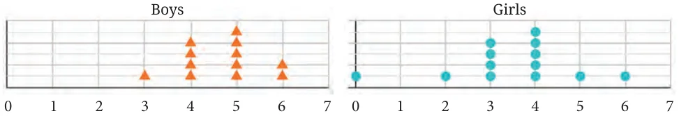
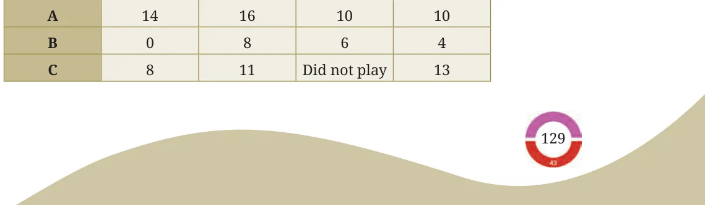
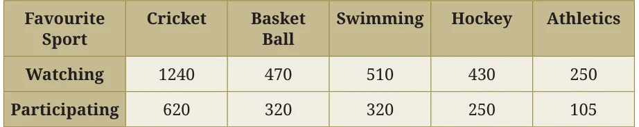
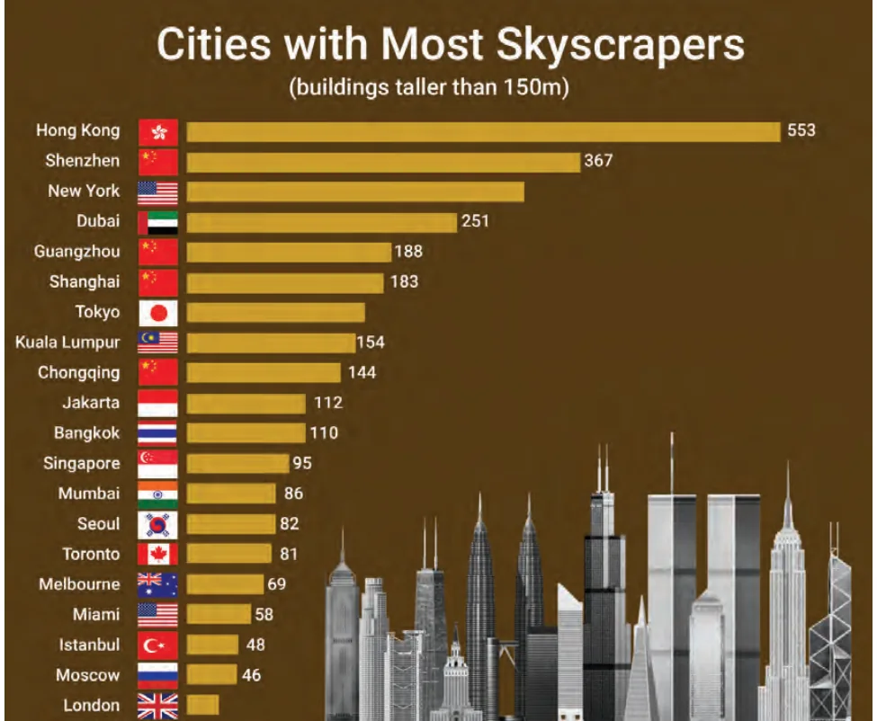
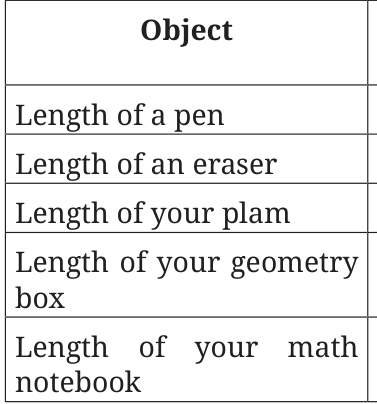
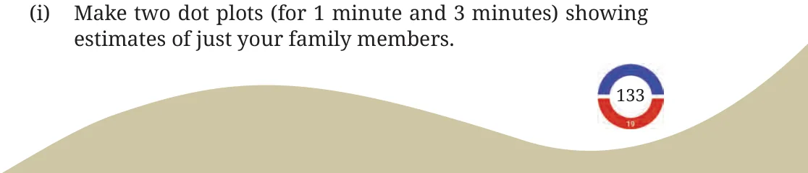

- The dot plots below show the distribution of the number of pockets on clothing for a group of boys and for a group of girls.

Based on the dot plots, which of the following statements are true?
- The data varies more for the boys than for the girls.
- The median number of pockets for the boys is more than that for the girls.
- The mean number of pockets for the girls is more than that for the boys.
- The maximum number of pockets for boys is greater than that for the girls.
- The following table shows the points scored by each player in four games:

Now answer the following questions:
- Find the average number of points scored per game by A.
- To find the mean number of points scored per game by C, would you divide the total points by 3 or by 4? Why? What about B?
- Who is the best performer?
- The marks (out of 100) obtained by a group of students in a General Knowledge quiz are 85, 76, 90, 85, 39, 48, 56, 95, 81 and 75. Another group’s scores in the same quiz are 68, 59, 73, 86, 47, 79, 90, 93 and
- Compare and describe both the groups performance using, mean and median.
- Consider this data collected from a survey of a colony.

Choose an appropriate scale and draw a double-bar graph. Write down your observations.
- Consider a group of 17 students with the following heights (in cm): 106, 110, 123, 125, 117, 120, 112, 115, 110, 120, 115, 102, 115, 115, 109, 115, 101. The sports teacher wants to divide the class into two groups so that each group has an equal number of students: one group has students with height less than a particular height and the other group has students with heights greater than the particular height. Suggest a way to do this. Can you guess the age of these students based on the tabular data in the ‘Telling Tall Tales’ section?
- Describe the mean and median of heights of your class. You can visualise the heights on a dot plot.
- There are two 7th grade sections at a school. Each section has 15 boys and 15 girls. In one section, the mean height of students is 154.2 cm. From this information, what must be true about the mean height of students in the other section?
- The mean height of students in the other section is 154.2 cm.
- The mean height of students in the other section is less than 154.2 cm.
- The mean height of students in the other section is more than 154.2 cm.
- The mean height of students in the other section cannot be determined.
- Standing tall in the storm.

- Write estimated values for the number of skyscrapers in New York, Tokyo, and London.
- Are the following statements valid?
- Only 12 cities have more skyscrapers than Mumbai.
- Only 7 cities have fewer skyscrapers than Mumbai.
- The tallest building in the world is in Hong Kong.
- Estimate and then measure the objects listed in the following table.
Draw a double bar graph based on the data. How accurate were your estimates? Find the average difference between the estimated and measured values.

Estimate Measure Positive (in cm) (in cm) Difference
- Aditi likes solving puzzles. She recently started attempting the ‘Easy’ level Sudoku puzzles. The time she took (in seconds) to solve these puzzles are \(- 410\), 400, 370, 340, 360, 400, 320, 330, 310, 320, 290, 380, 280, 270, 230, 220, 240. The first nine values correspond to Week 1 and the rest to Week 2.
- Construct a dot plot below showing the data for both weeks.
- Describe the mean, median, and any observations you may have about the data.
Week 1 Week 2
200 220 240 260 280 300 320 340 360 380 400
- Individual Project: Pick at least one of the following:
- How Long is a Sentence? Pick any two textbooks from different subjects. Choose any page with a lot of text from each book.
- Use a dot plot to describe how many words the sentences have on each page.
- Compare the data of both the pages using mean and median.
- What is in a Name? Write down the names of all of your classmates. The following are some interesting things you can do with this data!
- Find the mean and median name length (number of letters in a name).
- Visualise the data and describe its variability and central
- Which starting letters are more popular? Which are less popular?
- What is the median starting letter? What does this say about the number of names starting with the letters \(A - M\) and \(N - Z\)?
- Plot a double-bar graph showing the number of boys’ names and girls’ names that:
- start and end with vowels,
- start with vowels and end with consonants,
- start with consonants and end with vowels,
- start and end with consonants.
- Individual project (long term): This requires collecting data over 2 weeks or more. In and Out: Track how many times you step out of your house in a day. Do this for a month.
- Describe the variability and central tendency of this data. Make a dot plot.
- Do you find anything interesting about this data? Share your observations.
- You can ask any of your family members or friends to do this as well.
- Small-group project: Pick at least one of the following. Make groups of 8 to 10. Collect data individually as needed. Put together everyone’s data and do the appropriate analysis and visualisation.
- Our heights vs. our family’s heights: Collect the heights of your family members.
- Make a dot plot showing heights of just your family members. Describe its variability and central tendency.
- Make a double-bar graph showing each student’s height next to their family’s mean height.
- Look at everyone’s data and share your observations.
- Estimating time: Check the time and close your eyes. Open them when you think 1 minute has passed (no counting). Note down after how m-any seconds you opened your eyes. Collect this data for yourself and for your family members. Repeat this activity to estimate 3 minutes.
- Mark these on the respective dot plots. Describe its variability and central tendency.
- Make a double bar graph showing each family’s mean 1 minute estimate and mean 3 minute estimate.
- Look at everyone’s data and share your observations.
